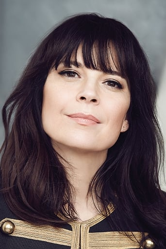
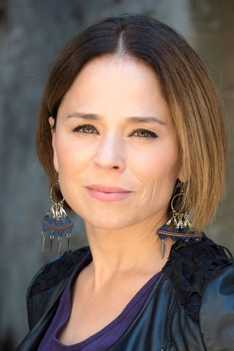
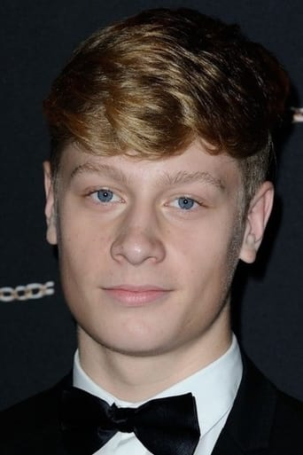

Elenco

Anne Dorval
Como mãe do Steve. Anne Dorval was born in Noranda, Quebec, Canada. She is an actress, known for Mommy (2014), I Killed My Mother (2009), and Heartbeats (2010).

Suzanne Clément
Amiga do Steve e da Mãe do Steve. Suzanne Clement is a Canadian film and television actress.

Antoine Olivier Pilon
Interpreta o Steve no filme. Antoine-Olivier Pilon was born on June 23, 1997 in Montreal, Quebec, Canada.